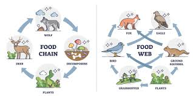
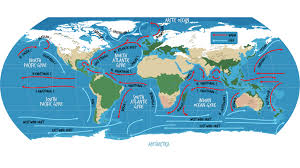
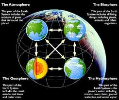

Nature's Interoperability: Why Everything's Connected
Weather isn't isolated. It's part of vast, complex systems that shape our planet. Understanding these connections is key to better prediction, and better choices for a healthier world.
Ecosystem Networks
From microscopic life to forests... how energy flows, weather impacts species, and how disruptions ripple outward.
Ocean Currents & The Atmosphere
Ocean temperatures, currents...these drive weather patterns on a vast scale, and vice-versa. El Niño is a classic example.
Systems Beyond Biology
Hinting to deeper implementation! Weather interacts with soil formation, erosion, even volcanic activity over long timescales. And vice-versa
Outcomes of Understanding Networks
Something to encourage enthusiasm for the models approach, "Traditional forecasting sees isolated events. Our approach reveals the feedback loops, helping us...". Then a short list of benefits:
- Forecasting unexpected extremes
- Finding the best places to mitigate climate impacts
- Making choices that work WITH nature, not against it